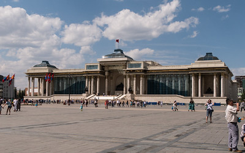

Welcome to Mongolia!

Source: Encyclopædia Britannica
https://www.flickr.com/photos/rietje/36812005092
Discover the beauty and culture of Mongolia, a land of vast landscapes, rich traditions, and unique experiences.
What you will find on this site:
- Top Destinations such as Gobi Dessert, Lake Khövsgöl, Terelj National Park, and Ulaanbaatar
- A look into Mongolian Culture, Traditions, and Festivals
- Popular local foods like buuz, khuushuur, and airag
- A form you can plan your Trip!
- Useful Tips for travel, packing, and proper etiquette
Travelers can experience unique traditions, explore ancient landscapes, and meet welcoming locals who have preserved a nomadic way of life for generations. Whether you're looking for adventure, history, or peaceful scenery, Mongolia has something to offer.
Fun Fact: Mongolia has more horses than people!
Click through the pages above to learn more about Mongolia's top destinations, food, and culture — and to plan your own unforgettable journey.